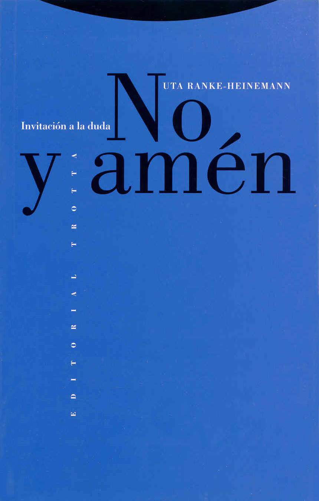

Uta Ranke-Heinemann nació en Essen, Alemania, el 2 de octubre de 1927, hija del que fuera presidente de Alemania de 1969 a 1974, Gustav Heinemann. Fue catedrática, académica y escritora. Después de siete años de estudios de teología protestante en Bonn, Basilea, Oxford y Montpellier, se convirtió al catolicismo en septiembre de 1953 y fue compañera de estudios de Joseph Ratzinger (Benedicto XVI), en la Universidad de Múnich, en los años 1953 y 1954, donde realizó su doctorado. Fue la primera mujer en obtener un doctorado en teología católica. En 1970 se convirtió también en la primera mujer del mundo en obtener una cátedra de teología católica: la cátedra de Nuevo Testamento e Historia de la Iglesia Antigua en la Universidad de Essen; pero en 1987 la Iglesia Católica le prohibió continuar la enseñanza en su cátedra, y seguidamente la excomulgó por herejía (canon 1364 § 1 CIC y canon 751 CIC), porque puso en duda la virginidad de María en la concepción y nacimiento de Jesús.
Su obra más conocida es
Eunucos por el reino de los cielos, Iglesia católica y sexualidad, que ha sido traducida en todo el mundo. En ella, de una forma clara y amena, pero siempre rigurosa y perfectamente documentada, hace un estudio crítico de la posición multisecular de la Iglesia católica contra el placer sexual.
Otra de sus obras también internacionalmente conocida es
No y amén, Invitación a la duda, publicado en alemán en 1992.
Nein und Amen, Mein Abschied vom traditionellen Christentum, en la que reflexiona críticamente con el mismo rigor científico (e invita a la reflexión) sobre los puntos claves de la doctrina de la Iglesia católica en conflicto con la modernidad. Es significativo el título secundario del libro en alemán:
Mi despedida del cristianismo tradicional. Ambas obras pueden descargarse de Internet.
Uta falleció el 25 de marzo de 2021 a los 93 años.
